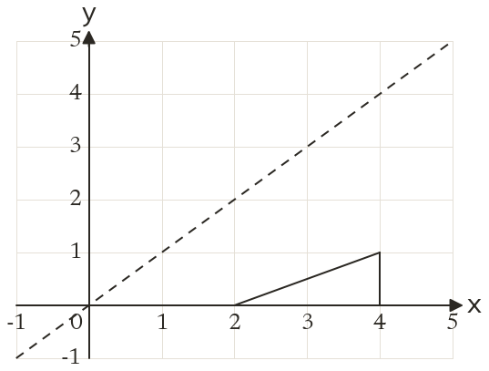
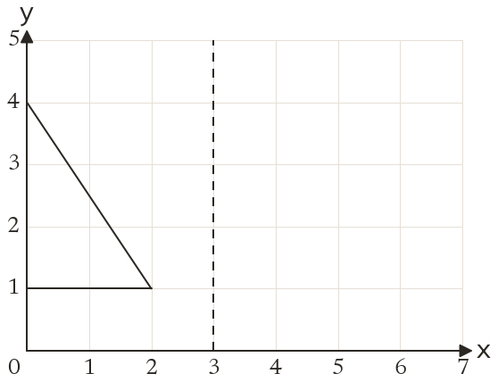
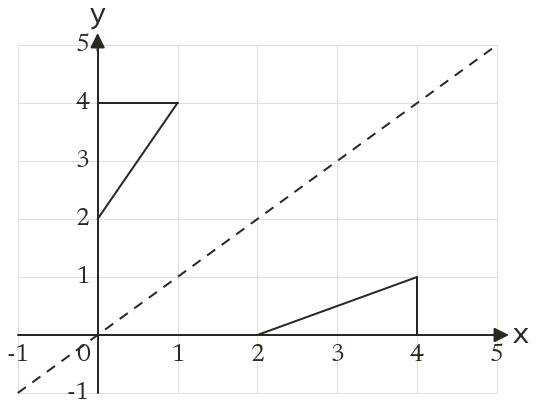
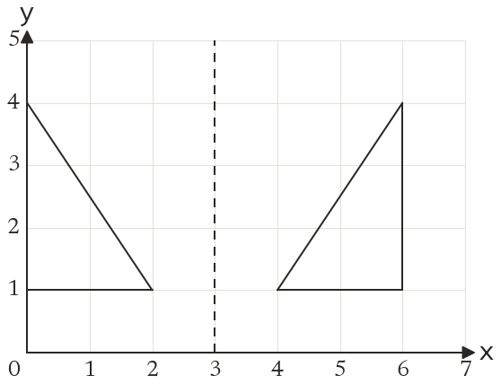

Westonbirt Maths · Symmetry and Transformations
Symmetry and Reflections
Name: ______________________ Date: ____________
1
Reflect the triangle in the line y = x.
2
Reflect the triangle in the line x = 3.
3
Reflect the point (5, 1) in the line y = x.
4
Reflect the point (-3, 2) in the line y = x.
5
Reflect the point (4, 6) in the line y = 4.
Ext
Give two points that do not move when they are reflected in the line y = x.



